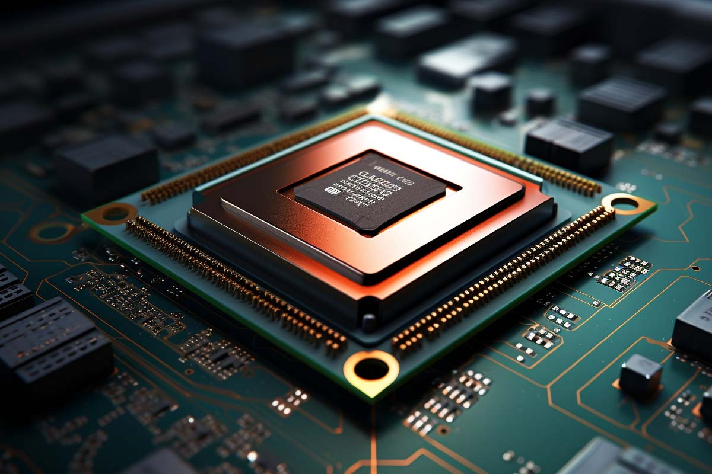
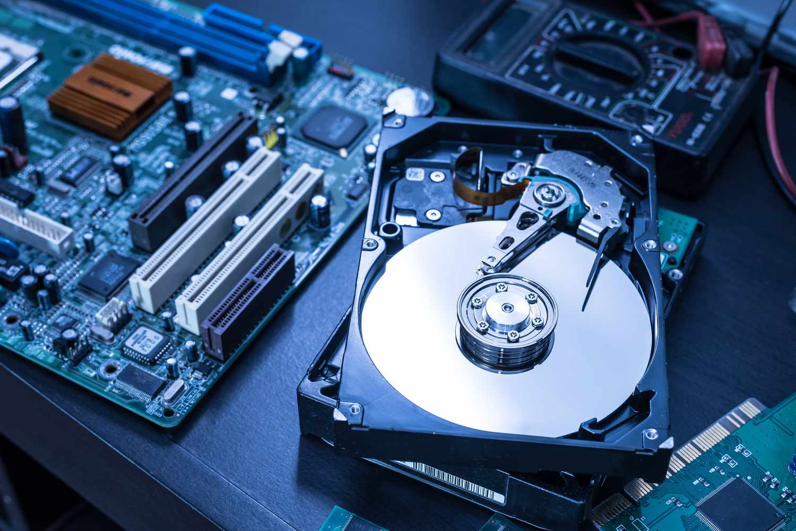
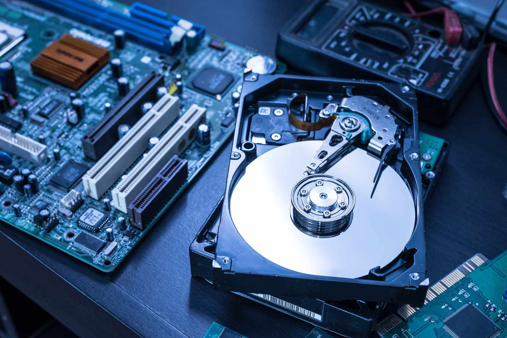

Top 3 Most Important Parts
- Central Processing Unit (CPU): The brain of the computer that processes instructions.
- Memory (RAM): Temporary storage for data being actively used by the CPU.
- Storage Drive: Permanent storage for all data and operating systems, such as SSD or HDD.
Images of the Parts
 

Learn More
For detailed information about computer parts, visit Computer Parts.